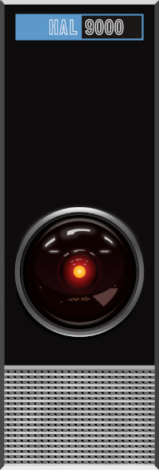

Open The Pod Bay Door Hall¶
{kind=link}

Even if you haven’t seen “2001: A Space Odyssey”, you have probably heard someone say “Open the pod bay door, HAL”.
“I can’t do that, Dave” is a familiar feeling for embedded systems developers when your hardware isn’t doing what you think it should.
By now you might have guessed that this article is about how having a HAL (Hardware Abstraction Layer) for your embedded system makes your life easy, changing to a new CPU is fast and painless, and the kids all get ballons and ice cream when your port takes only hours because of your awesome platform approach.
The reality is always different - what started as a simple port is now a bit more complicated because a new RTOS is mandated, and there are new security requirements, and the interface to expander boards is different, and so on.
All of a sudden, the HAL is the least of your problems because on top of the architectural changes, you don’t have any kind of unit test framework or continuous integration system to help you move forward with confidence.
Take heart - this is the perfect time to get all of that stuff in place with a small and focused team. And you can take advantage of the fact that you don’t have any hardware yet to get these critical building blocks in place.
Let’s find out how to approach this starting with the HAL …
Your HAL Might Not Be Helping¶
If you are still worrying about generalizing your hardware in terms of GPIOs and serial ports, you are probably abstracting too close to the hardware. This isn’t obvious until you start thinking about testabiity and interfaces.
For example, your old hardware used a UART to communicate between the MCU and a peripheral, and now you want to move up to a higher speed SPI interface. The simple port just got a bit more complex because even if the message contents haven’t changed much, having a HAL at the hardware later doesn’t help at all.
That’s why we are going to switch gears and think about an approach to a HAL that looks at systems. In other words, we don’t do:
// Open the pod bay door
set_gpio(PORT_DOOR, PORT_UNLOCK_PIN, GPIO_HIGH);
set_gpio(PORT_DOOR, PORT_DOOR_MOTOR, GPIO_HIGH);
while( GPIO_LOW != get_gpio(PORT_DOOR, PORT_DOOR_OPEN_CONTACT)
wait()
set_led(LED_DOOR_OPEN, LED_ON);
Instead, we do:
open_pod_bay_door();
And no, we don’t use our hand-rolled GPIO and LED HAL inside the open_pod_bay_door() function, because someday we might switch to a CAN interface or disconnect the LED handling from the door opening command.
A Different Approach to HAL¶
It took me almost 40 years and many frustrated project managers to realize that we are better off thinking about embedded systems in terms of their functional blocks - the GPIO and LED interfaces are just how this version of the hardware implements the functionality.
Why were there frustrated project managers?
Because they were told that this was going to be a simple port, and we had a good HAL so it should be easy. And someone made an optimistic guess so that the project could get approved and funded. The true complexity of the work wasn’t obvious until we started to do more detailed design and discovered hidden dependencies. I’ll stop here and leave that for another article on humble planning.
In a recent project, we had to implement similar functionality on two different MCU families. Instead of abstracting the MCU hardware in yet another general HAL, we abstracted the functionality like this:
// pod_bay_door.h - Pod Bay Door Interface
int32_t init_pod_bay_door(void);
int32_t open_pod_bay_door(void);
int32_t close_pod_bay_door(void);
int32_t get_pod_bay_door_status(void);
We then implemented these 4 functions twice, once for each vendor supplied HAL interface. This turned out to be good because the door status on one system was a simple GPIO read, and the other was a remote Hall-effect sensor on a serial interface.
It wasn’t really that much more work - and the secret weapon is that with this level of abstraction, we were able to implement all of the logic around the door opening conditions without real hardware. To make things even better we used a unit test framework and TDD (Test Driven Development) to make sure we only wrote code the needed to implement the desired functionality.
You might think we had to wait until we had real hardware to integrate everything, but again, the answer is no. Our chosen MCUs had inexpensive development boards available, and we were able to get the drivers up and running to the point where we were confident that when we got the real boards things would work.
In fact, because we wrote things with testability in mind, we were able to get the the door opener subsystem working in isolation on the development board. When the real hardware arrived, we were able to quickly get the door hardware subsystem running.
Lessons for Your Next HAL¶
First, accept the fact that a general HAL might help if you your design never changes how the MCU accesses perpipherals. But it won’t help you figure out all the other dependencies that you will discover along the way.
On your next project, consider doing a small scale experiment that should take no more than a 1 week timebox. Try to break one part of the project down into its key functions, and then implement any hardware dependencies using the vendor supplied HAL directly.
For example, I have made an Arduino project called Serial9 to exchange data on a 9 bit physical serial bus using an 8 bit USB serial device.
This one was simple enough to not have a test suite, but to be honest the Python side of the interface in the host was written using TDD and I did manage to find a few bugs in the Arduino implementation. I will eventually add a Cpputest suite and the supporting Python library to the repo.
I’ll be curious to hear any feedback on this approach to a HAL.